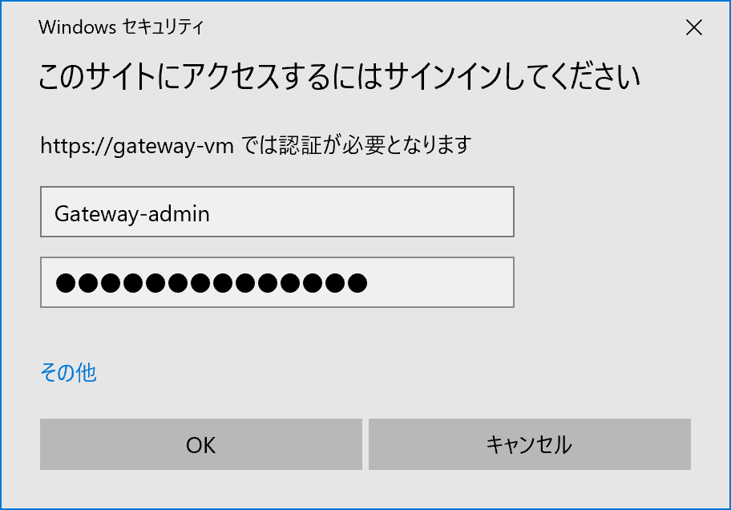

本記事は、マイクロソフト社員によって公開されております。
こんにちは、Windows サポートチームの関口です。
昨今、 Azure やオンプレミスサーバーで大量のマシンを管理する必要性が高まっています。
本記事ではマシン管理に便利な Microsoft が公開している管理ツールである Windows Admin Center についてインストール方法と使い方を紹介します。
管理用の PC からサーバーや仮想マシンを制御する方法は様々な手段が挙げられますがツールによっては便利な半面、管理するサーバーが増えるとサーバー毎に接続を切り替える必要があり、複数の台数を管理する際は不便でした。
本記事では Windows Admin Center を試したいユーザー向けに Azure 上に作成した環境を用いた実際のインストール手順をご案内します。
目次
- Windows Admin Center のインストール方法と使い方
- 目次
- Windows Admin Center とは
- Windows Admin Center の入手方法
- クライアント OS にインストールする場合
- サーバー OS にインストールをする場合
- Windows Admin Center の使い方
- 参考リンク
Windows Admin Center とは
Windows Admin Center とは、ブラウザ上で Windows サーバーを管理できる GUI ツールです。サーバーを管理するためのツールは従来では PowerShell やリモートデスクトップ等様々なツールがありましたが、 Windows Admin Center ではこれらのツールを集約することによりブラウザ上で効率的に Windows マシンを管理することができます。
Windows Admin Center を用いることで、ツールや接続を切り替える事無く各マシンに対してリモートデスクトップを行ったり PowerShell を用いてリモートでのコマンド/コマンドレットの実行が可能になります。
本記事では下記 2 つのシナリオでインストール方法と使い方を紹介させていただきます。
①クライアント OS にインストールする場合
②サーバー OS にインストールをする場合
Windows Admin Center の入手方法
Windows Admin Center は下記のリンクから無料でダウンロードが可能です。必要な情報を入力後 Continue をクリックすることでダウンロードが始まります。
クライアント OS にインストールする場合
管理用のクライアント端末からサーバーを管理する場合のインストール方法について説明します。こちらのケースは小規模なシナリオに適しています。
今回は Azure 上に用意した Client-VM に Windows Admin Center をインストールし、同一ネットワーク上にある Managed-VM を管理するケースを想定しています。
本手順で用意している構成
今回は下記のような環境を Azure 上に用意しました。
同一ネットワーク上にマシンを 2 台作成する方法は下記のチュートリアルをご参照ください。
ただし、下記チュートリアルでは受信ポートの規則という項目のパブリック受信ポートが [なし] となっておりますが、今回は後程リモートデスクトップを用いて Client-VM へ接続するため [選択したポートを許可する] を選択し、3389 のポートを開放しております。
Azure Portal を使用した仮想ネットワークの作成 (外部リンク)
Windows Admin Center のインストーラーを用意する
以下の作業を行いインストーラーを Client-VM へ送ります。今回はリモートデスクトップを用いてインストーラーをインストールするマシンに用意します。
手元のPCで下記 URL にアクセスし Windows Admin Center のインストーラーをダウンロードします。
リモートデスクトップを用いて Client-VM へ接続します。
AzurePortal 上で Client-VM をクリックし、[接続] → [RDP ファイルのダウンロード] をクリックすると RDP ファイルがダウンロードされます。
ダウンロードした RDP ファイルをクリックし、 Client-VM の管理人としてログインします。
手元の PC からインストーラーを Client-VM へ送ります。
拡張セッションをお使いの場合は手元の PC 上でインストーラーをコピーし、リモートデスクトップの画面上でペーストを行うことでインストーラーを Client-VM へ送ることができます。
インストール方法
用意したインストーラーを Client-VM 上で実行します。
ライセンス条項を読み [これらの条件に同意します] にチェックを入れ [次へ] をクリックします。
次へをクリックします。
Microsoft Update を使うと自動更新によって最新の Windows Admin Center を自動更新することができます。
次へをクリックします。
今回はショートカットを作成するにチェックを入れます。
今回は下記の設定で行います。
- Windows Admin Center がこのコンピューターの信頼されているホストの設定を変更することを許可する
- Windows Admin Center を起動するデスクトップショートカットを作成する
- Windows Admin Center を自動的に更新する
インストールをクリックしインストールを行います。
チェックを入れると Edge が立ち上がり自動で Windows Admin Center が起動します。
Edge で localhost:6516 に接続し Windows Admin Center を起動します。証明書の選択を求められるため [Windows Admin Center Client] を選択します。
Windows Admin Center のホーム画面が表示されます。
サーバー OS にインストールをする場合
マシン達を管理するゲートウェイサーバーを用意し、そのゲートウェイサーバー上にインストールをする方法を説明します。
クライアント端末にインストールを行う場合、管理用のクライアント端末が増えると各端末にインストールを行う必要があります。
このような場合代わりにゲートウェイサーバーなどのサーバー OS にインストールを行い、各端末のブラウザからゲートウェイサーバーにアクセスすることで各端末にインストールを行う手間を減らせる利点があります。
こちらのケースは大規模なシナリオに適しています。
今回は Azure 上に用意した Client-VM から Windows Admin center をインストールした Gateway-VM を介して同一ネットワーク上にある Managed-VM を管理するケースを想定しています。
本手順で用意している構成
今回は下記のような環境を Azure 上に用意します。
Azure 上で同一ネットワーク上にマシンを作成する方法は下記のチュートリアルをご参照ください。
下記チュートリアルでは受信ポートの規則という項目のパブリック受信ポートが [なし] となっておりますが、今回は後程リモートデスクトップを用いて Client-VM と Gateway-VM へ接続するためこの 2 台は [選択したポートを許可する] を選択し、3389 のポートを開放してください。
Azure Portal を使用した仮想ネットワークの作成 (外部リンク)
インストール方法
[クライアント端末にインストールする場合] の [インストーラーを用意する] と同様の手順で Gateway-VM に リモートデスクトップを用いて接続をし、 Gateway-VM 上にインストーラーを用意し実行します。
ライセンス条項を読み [これらの条件に同意します] にチェックを入れ [次へ] をクリックします。
次へをクリックします。
次へをクリックします。
次へをクリックします。
Windows Server にインストールする際はデフォルトでポートが 443 となります。
また今回は自己証明書を用いていますが、実運用では適切な SSL 証明書を用いることが推奨されます。
インストールをクリックするとインストールが始まります。
次に Client-VM へリモートデスクトップを用いて接続を行い Edge を起動します。
Edge で https://Gateway-VM へアクセスします。
自己証明書を用いているためこのような画面が表示されますが、詳細をクリックし [gateway-vm に進む (安全ではありません)] をクリックします。
認証を求められるため Gateway-VM の管理人アカウントを入力します。

Windows Admin Center の使い方
Windows Admin Center は非常に機能が多いため、ここではその中の一部を紹介させていただきます。
UI の言語を日本語に変更する方法
サーバーの追加方法
Windows Admin Center からコマンドレットを送る
その他、機能の一部はドキュメントの下記ページに公開しておりますので、併せてご参照ください。
UI の言語を日本語に変更する方法
画面上の左上にある歯車のマークをクリックします。
左のサイドメニュー内にある [Language / Region] をクリックし、Language を [日本語] に変更し [Save and reload] をクリックします。
Windows Admin Center の UI が日本語になります。
サーバーの追加方法
ホーム画面左上にある [追加] をクリックしサーバー内の [追加] をクリックします。
このような表示が出てくるので各項目を入力します。
ホーム画面上にサーバーが追加されます。
Windows Admin Center からコマンドレットを送る
Windows Admin Center では管理しているサーバーに対してブラウザ上からコマンドレットを実行することができます。
コマンドレットを実行したいサーバーをクリックします。
左側のサイドメニュー上にある PowerShell をクリックすると画面に PowerShell が表示されます。
systeminfo のコマンドレットを行うと Host Name が Managed-VM となっており、指定したサーバー上で実行された結果であることがわかります。
参考リンク
- 最新情報などの情報がまとまっています。
- 公式ドキュメントです。
- Windows Admin Center の機能についてまとまっているページです。具体的にどんな機能があるかを知りたい際に便利です。
Windows Admin Center Blog - Microsoft Tech Community (英語)
- Windows Admin Center の Tech Community ブログです。最新機能などの情報が充実しています。